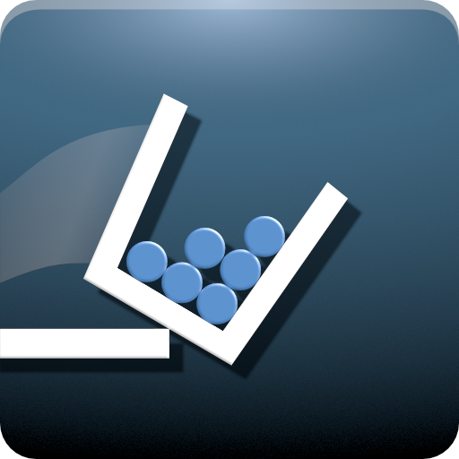

Мои увлечения
Мои увлечения - это то, что придает моей жизни радость, вдохновение и возможность проявить свою креативность. Они являются моим способом расслабиться, развлечься и раскрыть свой потенциал в различных областях.
Одно из моих главных увлечений - это музыка. Я обожаю слушать различные жанры музыки и
самостоятельно
играть
на инструментах. Музыка для меня является не только источником наслаждения, но и способом
самовыражения.
Еще одно из моих увлечений - это фотография. Я люблю фиксировать моменты своей жизни и окружающего
мира
через объектив фотокамеры. Фотография помогает мне увидеть красоту в простых вещах и запечатлеть
важные
моменты, которые могут остаться в памяти навсегда. Это также отличный способ развивать свою
творческую
мысль
и экспериментировать с композицией и светом.

Музыка

Программирование

Автомобили
Игры в которые играю:
- 